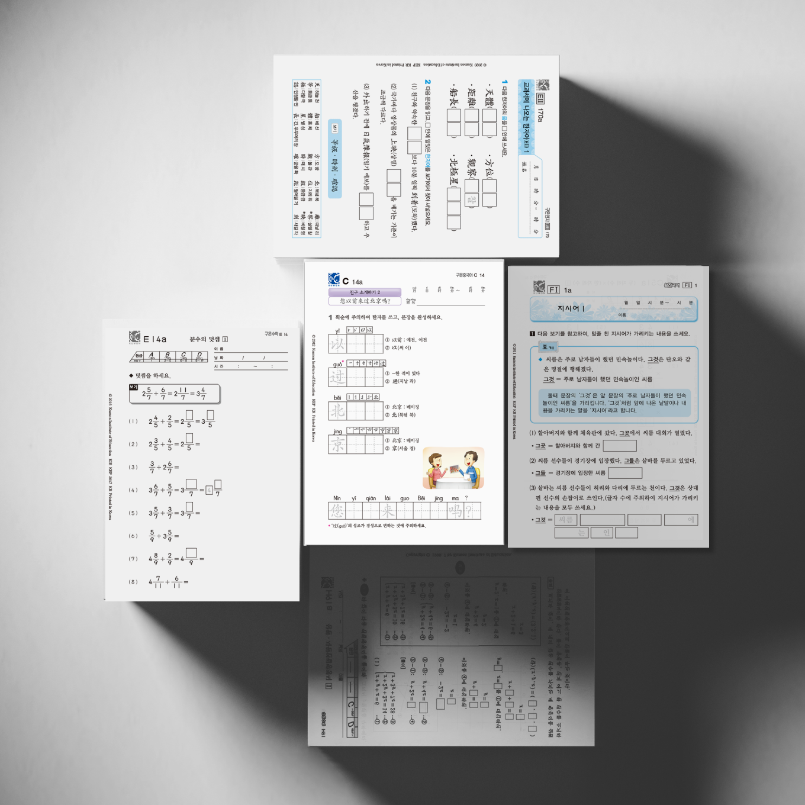
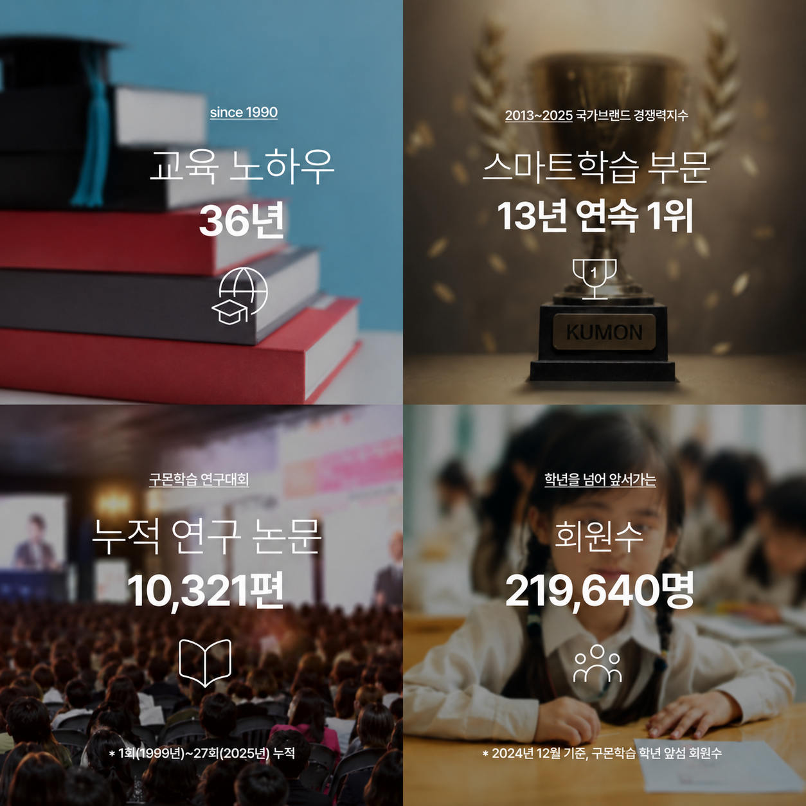

1990년, 한 장의 학습지에서 시작된 배움.
오랜 시간 한결같이 선택받으며
한 세대를 넘어선 학습이 되었습니다.
오래되어서가 아니라,
시대를 넘어 검증되었기 때문입니다.
나이에 상관없이, 구몬은 성장하는 아이뿐 아니라
삶을 더 단단히 살아가고 싶은 모든 이들을 위한 학습입니다.
단계와 연령에 따라 필요한 역량을 짚고
개별 맞춤형 학습으로 자기 성장을 이끌어냅니다.

모든 학습자는 학습 속도도, 이해 방식도 다릅니다.
그래서 구몬은 누가 가르쳐 주지 않아도 스스로 공부를 이어갈 수 있도록
한 명, 한 명의 능력에 꼭 맞춘 학습을 제공합니다.
학년이 아닌 ‘현재 실력’에서 출발해,
무리 없이 매일 자신감을 쌓아요.
정답을 찾기보다는 ‘생각해내는 과정’
서술형으로 스스로 풀며 사고력을 길러요.
정확함과 속도를 함께, 검증된 표준 완성 시간.
목표 시간 안에 풀어내는 힘을 키워요.
난이도 차이를 거의 느끼지 못할 만큼 단계를 세분화해,
자연스럽게 새로운 개념을 도전해요.
필요한 만큼만 반복을 통해 ‘안다’를 넘어 ‘술술 해낸다’까지.
기초 개념을 확실히 잡아주고, 구멍 없이 완성해요.
믿고 맡긴 만큼, 결과로 돌려주는 구몬학습입니다.

원활한 학습 안내를 위해 제작한 임시 안내 페이지입니다.